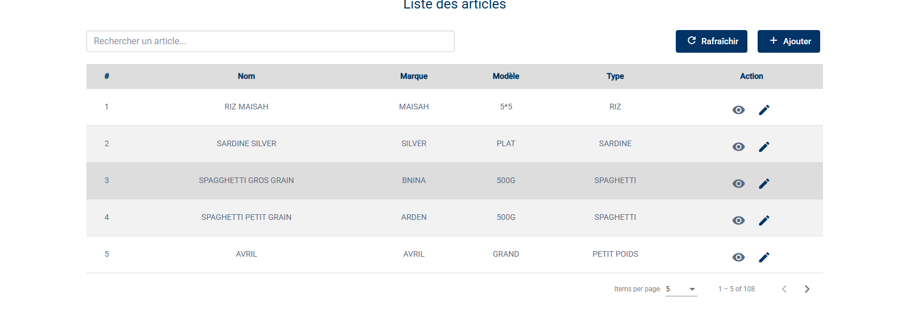
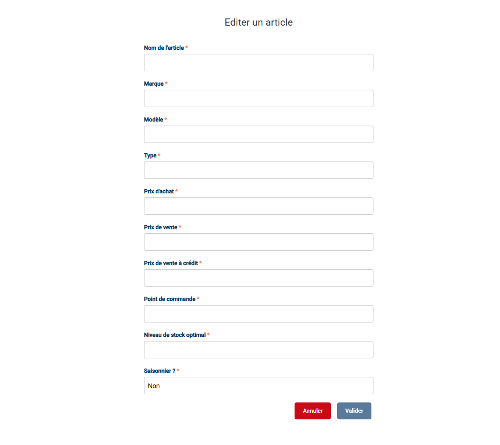
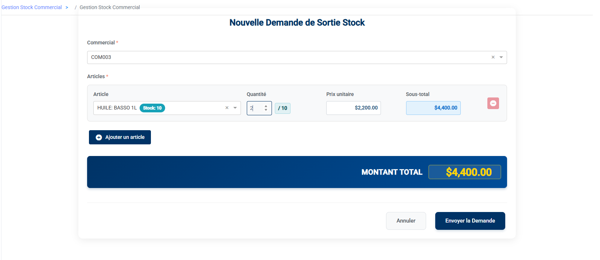
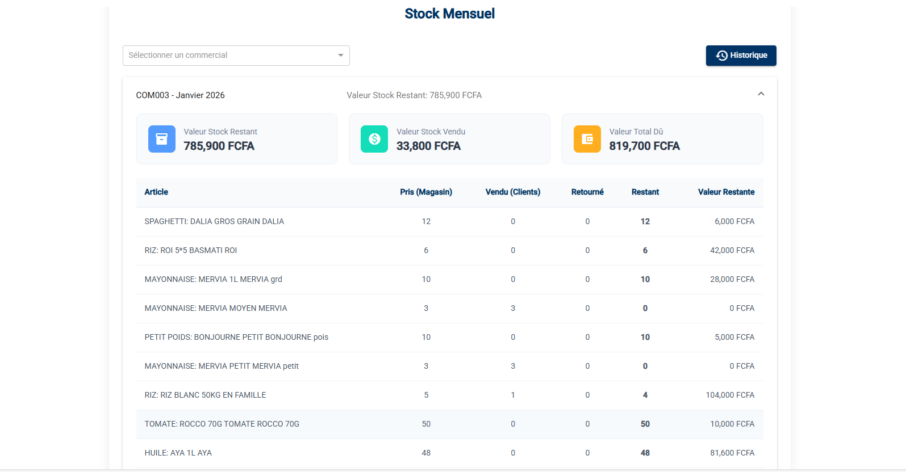
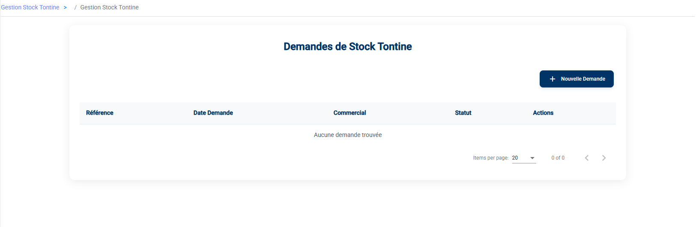
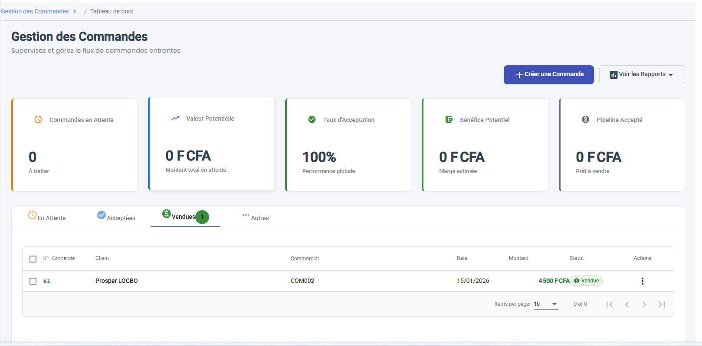
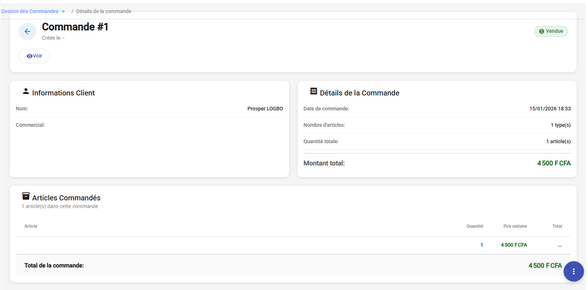
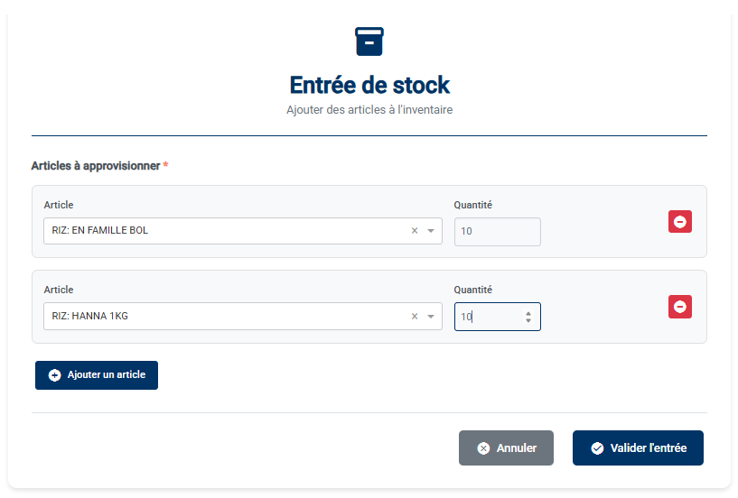
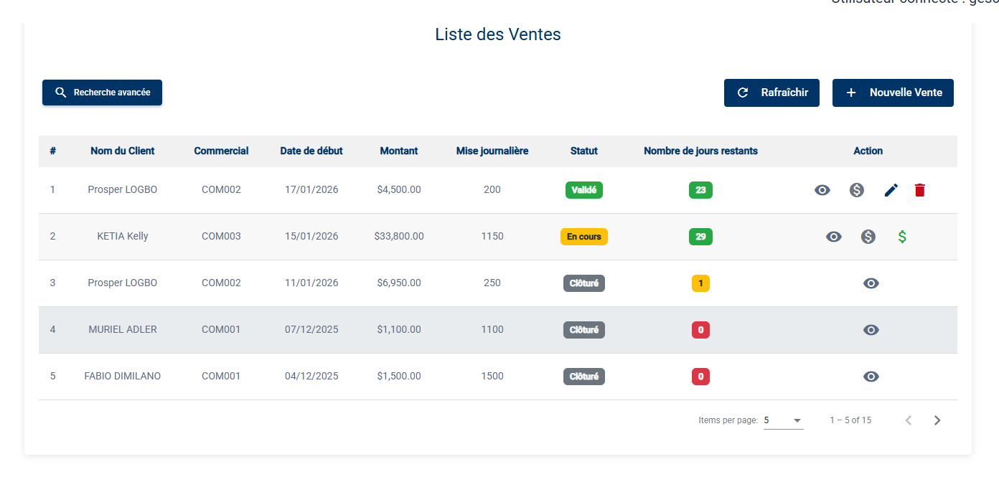

Stocks & Ventes
Cette section couvre la gestion du catalogue produits, des stocks et du cycle de vente.
1. Articles
Le menu Articles gère le catalogue des produits disponibles à la vente.
Liste des Articles (Tableau)
Vue d'ensemble des produits référencés.

Colonnes affichées : * # : Index. * Nom : Désignation de l'article. * Marque : Fabricant ou marque. * Modèle : Référence modèle. * Type : Catégorie du produit. * Action : Modifier ou Voir les détails.
Création d'Article (Formulaire)
Pour ajouter un produit au catalogue, cliquez sur Ajouter.

Champs à renseigner : * Identification : Nom de l'article, Marque, Modèle. * Classification : Type d'article (Menu déroulant). * Tarification : * Prix d'achat (Coût revient). * Prix de vente (Comptant). * Prix de vente à crédit (Si applicable). * Gestion de Stock : * Point de commande (Seuil de réapprovisionnement). * Niveau de stock optimal.
2. Stock Commercial
Ce module vous permet de piloter les stocks confiés à vos agents commerciaux. Le flux de travail se décompose en trois étapes clés : Approvisionner, Suivre, et Réceptionner les retours.
a. Approvisionner un Commercial (Demandes Sortie)
Pour qu'un commercial puisse vendre, il faut d'abord lui transférer du stock depuis le magasin central.
Procédure : 1. Allez dans Stock Commercial > Demandes Sortie. 2. Cliquez sur Nouvelle Demande. 3. Formulaire de création : * Sélectionnez le Commercial. * Ajoutez les Articles et les quantités désirées. 4. Enregistrez.
Important : À ce stade, la demande est un BROUILLON. Le magasinier ne la voit pas encore.
Validation (Étape Critique) : Pour que le magasinier puisse préparer et livrer la marchandise, vous devez VALIDER la demande. * Ouvrez la demande créée (statut "Créé"). * Cliquez sur le bouton Valider (Coche verte). * Résultat : Le statut passe à "Validé" et la demande devient visible pour le magasinier.

b. Suivre les Stocks Agents (Tableau de Bord)
A tout moment, vous devez savoir qui détient quoi. 1. Allez dans Stock Commercial > Stock. 2. Ce tableau de bord vous montre Commercial par Commercial : * La valeur totale de marchandises emportées. * Ce qui a été vendu. * Ce qui reste dans leurs mains (Stock Restant).
Astuce : Utilisez ce tableau en fin de journée pour vérifier la cohérence des ventes déclarées par vos agents.

c. Consulter les Retours (Invendus)
La gestion opérationnelle des retours est effectuée par les Commerciaux et les Magisiniers. En tant que Manager, votre rôle est de surveiller ces mouvements pour analyser les taux de retours.
Ce que vous pouvez faire : 1. Allez dans Stock Commercial > Retours. 2. Consultez la liste pour voir qui a ramené quoi. 3. Vérifiez les statuts : * Créé : Le commercial a signalé un retour, en attente de réception par le magasin. * Validé : Le magasinier a confirmé la réintégration des articles en stock.
Note : Vous n'avez pas d'action de validation à faire ici, c'est la responsabilité du magasinier.

3. Stock Tontine
Le principe est identique au Stock Commercial, mais concerne exclusivement les marchandises destinées aux Tontines.
- Approvisionner : Utilisez Stock Tontine > Demandes Sortie pour donner des articles tontine à un agent.
- Suivre : Utilisez Stock Tontine > Stock pour voir l'état des stocks tontine dispatchés.
- Récupérer : Utilisez Stock Tontine > Retours pour les produits non distribués.

4. Commandes
Ce menu centralise les intentions d'achat avant qu'elles ne deviennent des ventes fermes. C'est votre sas de validation.
a. Indicateurs Clés de Performance (KPIs)
En haut de la page, cinq indicateurs vous donnent une vue d'ensemble instantanée : * Commandes en Attente : Le volume de demandes nécessitant votre attention immédiate (Statut "À traiter"). * Valeur Potentielle : Le chiffre d'affaires total qui attend votre validation. * Taux d'Acceptation : Votre ratio de validation (Commandes validées / Total des demandes). * Bénéfice Potentiel : La marge estimée sur les commandes en attente. * Pipeline Accepté : La valeur des commandes validées, prêtes à être converties en ventes.
b. Gérer les Commandes (Vue Liste)
Le tableau principal vous permet de suivre l'état de toutes les commandes en cours. * Onglets : Naviguez entre En Attente, Acceptées, Vendues et Autres pour filtrer par étape. * Colonnes Clés : * N° Commande : Référence unique pour le suivi. * Statut : L'indicateur le plus important (En Attente = Action requise).

c. Créer une Commande
Pour initier une nouvelle demande client : 1. Cliquez sur Ajouter. 2. Client : Recherchez le client. Son solde actuel s'affiche pour info. 3. Panier : Ajoutez les articles. Le total se calcule automatiquement. 4. Enregistrer : La commande passe au statut "En Attente".

d. Valider et Transformer en Vente
C'est ici que se joue votre rôle de contrôle. 1. Ouvrez une commande (clic sur l'œil Détails). 2. Vérifiez le contenu : Articles, prix total, identité du client. 3. Approuver (Validation) : * Si tout est correct, cliquez sur le bouton Valider (visible uniquement pour les commandes "En Attente"). * Le statut passe à "Acceptée". 4. Conclure (Vente) : * Pour finaliser, cliquez sur Transformer en Vente. * Action irréversible : Le stock est déduit du commercial et la dette est ajoutée au client.

5. Inventaires (Cycle de contrôle)
La gestion des inventaires chez ELYKIA suit un cycle rigoureux pour garantir que le stock système correspond à la réalité physique.
Le Cycle d'Inventaire en 5 Étapes
-
Démarrage (Création) :
- Cliquez sur + Créer un inventaire.
- Le système fige une "image" théorique de votre stock à cet instant.
- Statut : BROUILLON.
-
Contrôle Physique (Terrain) :
- Cliquez sur Télécharger PDF.
- Imprimez cette fiche et allez dans l'entrepôt pour compter physiquement chaque article.
- Ne regardez pas les quantités système pour ne pas être influencé.
-
Saisie des Résultats :
- Cliquez sur Saisir quantités physiques.
- Reportez les chiffres de votre comptage dans le tableau.
- Enregistrez.
-
Analyse et Réconciliation (Gestionnaire) :
- Le système calcule automatiquement les écarts.
- Cliquez sur Réconcilier les écarts pour traiter les anomalies :
- Surplus : Stock physique > Stock système. Validez pour ajouter l'excédent.
- Manquant (Dette) : Stock physique < Stock système. Vous devez justifier l'écart ou le marquer comme une Dette Magasinier.
-
Clôture (Fin de mois) :
- Une fois tous les écarts justifiés, cliquez sur Clôturer l'inventaire.
- Le stock système est officiellement mis à jour et devient la nouvelle référence.

Gestion des Entrées (Approvisionnement Fournisseur)
En dehors des inventaires, pour ajouter du stock venant d'un fournisseur : 1. Cliquez sur + Entrées. 2. Ajoutez les articles reçus. 3. Validez pour augmenter le stock immédiatement.

6. Ventes (Création & Suivi)
Ce module est le cœur de votre activité commerciale. Il permet non seulement de suivre l'historique, mais aussi d'enregistrer des ventes directes.
a. Créer une Vente (Directe)
Si le client est présent et que vous avez du stock (ou que vous vendez à crédit), passez par ici. 1. Cliquez sur Nouvelle Vente (Bouton +). 2. Type de Vente : Choisissez immédiatement entre Crédit (nécessite un Commercial) ou Comptant. 3. Remplissez le formulaire : * Client : Obligatoire. * Articles : Sélectionnez les produits. * Avance : Optionnel. 4. Validez.
b. Suivre l'Activité Commerciale (Vue Liste)
Le tableau de bord des ventes vous donne la santé financière de vos crédits en cours. * Colonnes Réelles : * Nom du Client : L'acheteur. * Commercial : L'agent responsable du recouvrement. * Date de début : Date de la transaction. * Montant : Total de la vente. * Mise journalière : Montant attendu chaque jour. * Statut : État du crédit (ex: En Cours, Validé). * Jours restants : Compte à rebours avant l'échéance.

c. Recherche Avancée (Filtres)
Pour retrouver une transaction précise, cliquez sur le bouton Recherche Avancée (Loupe) pour ouvrir le panneau de filtres. Vous pouvez combiner 5 critères : 1. Mot-clé : Recherche textuelle (Nom, Référence, etc.). 2. Type de client : Filtrez par Client ou Commercial (Promoteur). 3. Type de vente : Vente à crédit ou Tontine. 4. Statut : État actuel du dossier (Créé, Validé, En cours, Livré, Terminé, etc.). 5. Commercial : Sélectionnez un agent spécifique pour voir son portefeuille.
d. Analyser les Détails
En cliquant sur l'icône Détails (œil), vous accédez à la fiche complète structurée en 4 blocs : 1. Informations du Client : Identité et contact. 2. Information des Articles : Liste détaillée des produits vendus (Quantité, Prix unitaire, Total). 3. Informations sur le Crédit/Vente : * Finances : Montant payé vs Restant, Mise journalière. * Suivi : Date de début/fin, Jours restants. * Responsable : L'agent collecteur associé.